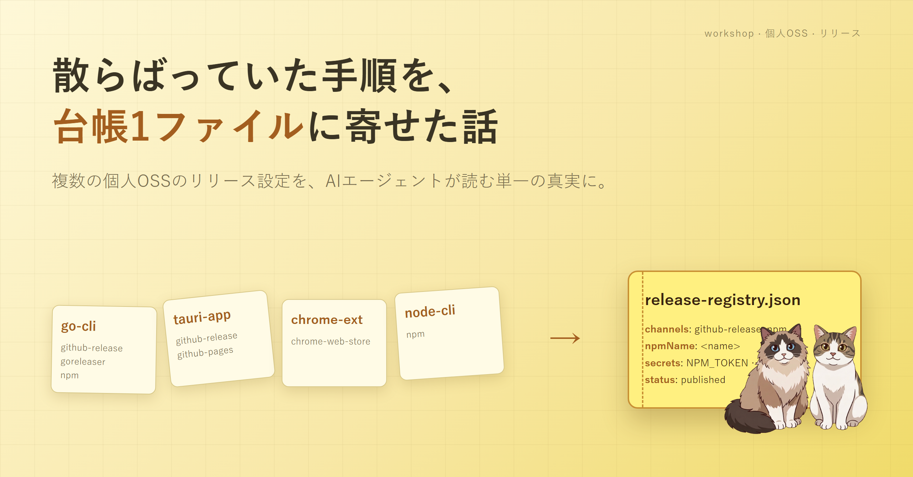

個人で OSS を複数抱えていると、リリースのたびに「あれ、この子の npm って何で配ってたっけ」を毎回思い出す羽目になる。今回は AI エージェントと一緒に、その「思い出し作業」を台帳 1 枚に押し込んだ話。設計が終わってから本物のリリースで踏んだ小さな地雷も含めて記録する。
公開している小さなツールが、気づいたら 8 個あった。Go の CLI、Tauri のデスクトップアプリ、Chrome 拡張、ブラウザ単一 HTML、プロンプト集まで、種類がバラバラ。リリース手順も全部違う。
secrets の要否も違う。困るのは、リリースしたいタイミングで「この子は homebrew も更新するんだっけ」「PUBLISH_GITHUB_TOKEN って必要だったっけ」を、毎回そのリポの中だけを見て思い出していたこと。リポを跨ぐと、自分の頭の中の地図が役に立たない。
深夜にひとつリリースして「あれ、なんで通らないんだ」とログを見て、結局「このリポでは secret の名前を別にしていた」だった、みたいな夜が何度かあった。
一番派手にやらかしたのが、Go の CLI を npm 経由でも配ろうとしたとき。bunx <tool> のように呼べると便利だから、というだけの動機で、root パッケージ＋ platform 別の optional 4 本を新規作成して公開しに行った。
新規パッケージの作成は、npm レジストリのレート制限に当たる。E429。「Too Many Requests、しばらく待って」。ここでよくやる失敗が、「えっもう一回」を連続で叩くこと。やったらどうなるか。窓がリセットされず、待ち時間がさらに伸びる。完全に逆効果。やった。
一度立ち止まって、自分が何に困っているかを書き出した。
<project> をリリースして で動いてほしい実行まで集約する必要はない。GHA はリポ単位で動く設計なので、そこを統合しようとすると無理が出る。集約したかったのは「設定」と「手順」だけだった。
寄せ先は JSON 1 ファイル。release-registry.json という名前にした。中身はこんな構造。
channels（github-release / npm / goreleaser / homebrew / winget …）npmName、必要な secrets、workflows の一覧status（published / planned / repo-only など）これを「単一の真実」と決めて、AI エージェント側のスキル（リリース手順をまとめた release スキル）はここを読んで動く。版数だけは別で、これはタグを単一ソースにした。v0.3.2 を打つだけが版を変える行為で、md やコードに二重に書かない。
新しい子を増やしたら、台帳に 1 ブロック追記する。これだけ。「次のリリースで思い出さなくて済むこと」が 1 つ増えるのが、地味に嬉しい。
E429 の話に戻る。新方式では、リリースのワークフローに npm_only=true の入口を 1 つ作った。やることはこう。
バックオフは指数で伸ばして、idempotent に作ってある。同じ版を二度叩いても壊れない。
台帳とスキルが揃ったところで、設計の話としては綺麗に閉じる。ただ v0.3.2 のリリースで実際に通してみると、台帳では吸えない小さな地雷が次々出てきた。並べてみると、似た顔つきの問題が多い。
develop の push 時には「前回 push 以降の差分」だけが secret-scan の対象。main に着弾した瞬間、前回リリースから今までの全 commit が一気にスキャンされ、過去 commit の問題が初検出される。develop の緑だけ見ていると、ここで足止めを食う。次回からは「main の Validate と secret-scan が緑」をタグ前の必須条件にする、という当たり前の運用に直した。
MaskSecrets() のテストには PASSWORD=topsecretvalue のような故意の偽秘密が入っていて、これを gitleaks が generic-api-key として拾ってくる。最初は該当ファイルだけ allowlist したが、別のテストファイルでも次々に同じことが起きた。ピンポイントで足していくと終わらない。最後は「テストファイル全般を信頼する」と一段広げて allowlist に _test.go を入れて止まった。_test.go はビルド成果物に入らないので流出経路もない、と納得した上で。
Windows パスを \ から / に変換しているつもりで、Linux ランタイムだと何も変換されない（os.PathSeparator が / なので）。POSIX シェル用の文字列を組むのにこれを使うと、CI で初めて落ちる。strings.ReplaceAll(p, "\\", "/") に書き換えて閉幕。古い Go コードに紛れがちな落とし穴。
「初回 publish の枠取りで出した 0.0.1 が、正式版を出した後も残る」のはよくある話で、npm deprecate で塞ぐ。ところが 2FA を有効にしている個人アカウントは、npm deprecate のたびにブラウザ web auth が走る。OTP 投入ではなく Authorize ボタンを押すフロー。バージョン × パッケージの件数分、URL を開いて Authorize、ターミナルに戻って Enter を繰り返す。CI から長期 token で済ませる手はあるが、個人 2FA アカウントは「手で押す前提」と腹を括った方が早い。
2 日前にローカルで作った大きめのコミットが、push を忘れたまま放置され、間に積み重なった新しい作業の下で孤立化していた。git log で見ても枝のどこにもいない、unreachable 状態。リポを壊したわけではないので git gc で消えるだけだが、本来そこに乗せたかった変更を後から拾い直す手数が発生する。コミットしたら同じセッション内で push する、それだけのルール。
before は、リポを開いて README を読み直して、過去の自分の手順メモを引っ張り出して、secret 名を確認して、ようやくタグを打っていた。after は、対象リポで AI エージェントを開いて「リリースして」と頼むと、台帳から channels と secrets を引いて、前提を確認して、ダメならどこで止まるかを言ってくれる。
タグを打つ前の前提チェックも、台帳に書いた secrets の存在確認まで含まれる。Validate ワークフローが赤なら、タグは打たない。これは自分が忘れがちな前提だった。
全部解決したかというと、まだ取りこぼしはある。Chrome ウェブストアは GitHub Actions の管轄外なので、ここだけは別の手で出す。winget は別軸の問題で、v0.3.0 / v0.3.1 / v0.3.2 の 3 件とも microsoft/winget-pkgs 側でモデレータ承認待ちのまま放置されていて、まだ一度も merge されていない。配布告知のページからは winget の行を一旦外して、npm / Homebrew / GitHub Release 直 DL の 3 経路に絞った。merge されたら戻す。
派手な自動化を一発で組むより、「覚えておかなくて済むこと」を 1 個ずつ増やしていく。今回もそれだけのことだった。台帳 1 ファイルから始めれば、たぶん同じことを誰でもできる。